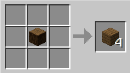
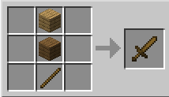
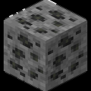
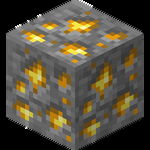
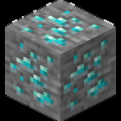
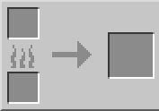

Getting Started
This section covers early survival basics: gathering wood, crafting tools, mining core ores, and smelting materials so you can safely progress through your first nights.
-
1. Gather wood: find nearby trees, break logs, and collect roughly 10 to 15 logs.

-
2. Open inventory with E and convert one log into wood planks.
-
3. Craft a crafting table using four planks, move it to your hotbar, place it, and open it.
-
4. Craft basic starter items: sticks, a wooden pickaxe, a wooden axe, and a wooden sword.

-
5. Find exposed stone or dig down a few blocks, then mine cobblestone with your wooden pickaxe.

-
6. Upgrade to stone tools by using the same recipe patterns, replacing planks with cobblestone.
-
7. Mine coal first, then mine iron ore once you have at least a stone pickaxe.

-
8. Craft a furnace using eight cobblestone and place it near your crafting table.

-
9. Smelt ore by placing ore in the top slot and coal in the bottom slot until ingots appear.
-
10. Use your new materials to craft torches, shield, and early armor so you can survive night and cave runs.
